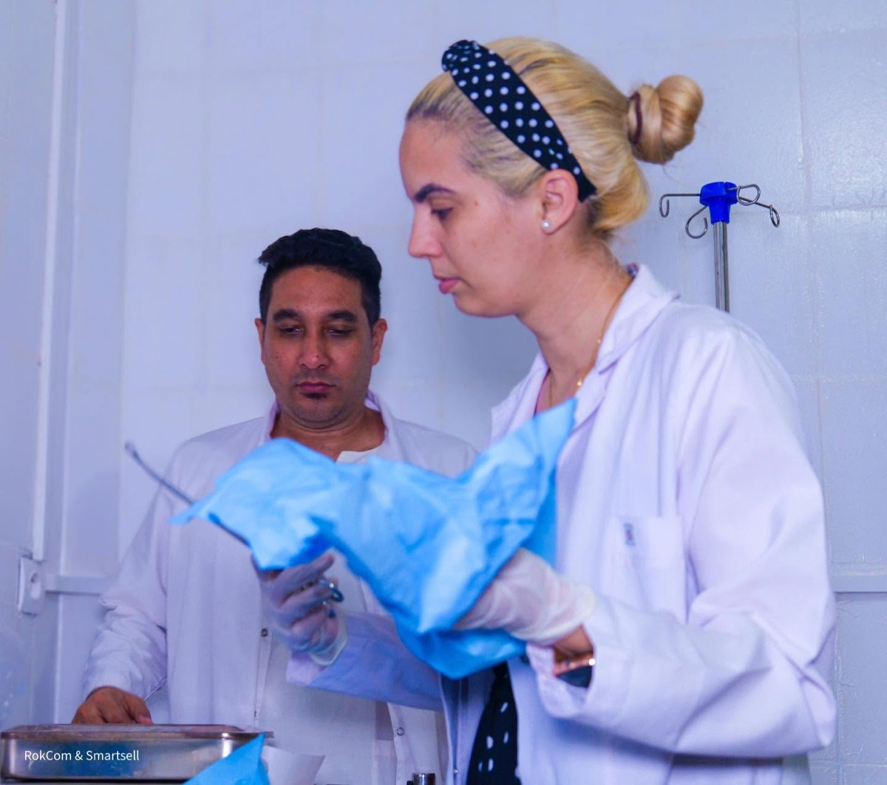

Laboratoire d’analyses
Vos résultats,
sans attendre.
Prélèvement simplifié, suivi en temps réel et résultats sécurisés dans votre espace patient.
3 étapesDu prélèvement au résultat
1Je réserveAvec ou sans ordonnance
2Je suis mon analyseStatut mis à jour en direct
3Je reçois mes résultatsDocument sécurisé
01
Nos analyses
Un laboratoire
proche et lisible.
Les délais indiqués sont des simulations. Les consignes exactes sont confirmées lors de la réservation.
⌕
AnalysePréparationDélai indicatif
BSBilan sanguin completÀ jeun selon prescription24 h
GLGlycémieÀ jeunLe jour même
BLBilan lipidiqueÀ jeun24–48 h
TPTest de dépistage paludismeAucuneRapide
AUAnalyse urinaireFlacon remis au centre24 h
Aucune analyse trouvée.

Précision · Confidentialité · RapiditéNotre engagement
Vos analyses expliquées, pas seulement livrées.
En cas de résultat nécessitant un suivi, votre médecin peut vous proposer un échange directement depuis l’espace patient.
Trouver un médecin →